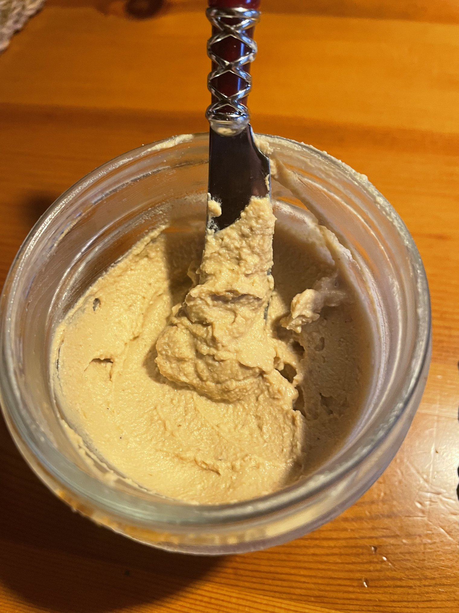

Paté de tofu y miso de cebada
Ingredientes
×
- 200 g de tofu firme
- 1 cda de miso de cebada
- 1 cda de aceite de oliva

Preparación
Paso 1
Escurrir 200 g de tofu firme y trocearlo.
Paso 2
Triturar con 1 cda de miso de cebada, 1 cda de aceite de oliva y un chorrito de agua hasta que quede una crema lisa.
Paso 3
Guardar en un bote en la nevera y servir para untar.
Resumen
200 g de tofu firme
Escurrir trocearlo
1 cda de miso de cebada
1 cda de aceite de oliva
Triturar